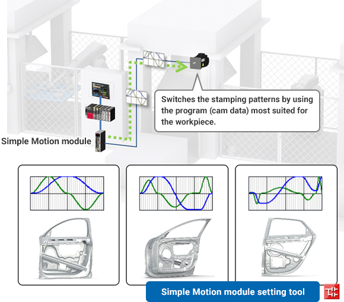

Solutions
Automotive Manufacturing

Press
- Improving energy efficiency by reducing power waste
- Reducing die changeover time by switching multiple stamping patterns according to the situation
- Reducing downtime by detecting the service life of servo motors

Solutions to the Issues
| Issues | Solutions |
|---|---|
| Improving energy efficiency by reducing power waste | Connect multiple servo amplifiers/drive units to an MR-CV power regeneration converter unit through common bus. |
| Reducing die changeover time by switching multiple stamping patterns according to the situation | Create various cam patterns and switch stamping patterns according to the situation. |
| Reducing downtime by detecting the service life of servo motors | Visualize the current condition by analyzing the collected vibration data. |
Issues
Improving energy efficiency by reducing power waste
Solutions
The servo motor of the feeder in the transfer stamping machine generates regenerative energy when it decelerates. Use the regenerative energy for driving other axes and/or return the energy to the power supply for reuse to improve energy efficiency.
- Reuse the regenerative energy returned to the power supply by a power regeneration converter unit connected to multiple servo amplifiers and drive units.
- A regenerative option is not required, generating less heat during regeneration and saving space.
Point
- Check the power consumption and total power consumption of the servo amplifiers and drive units with a controller.
- For small capacity, multi-axis servo amplifiers are available which allow the axes to automatically use regenerative energy from the other axes of the servo amplifier without an MR-CV.

Product Lineup


Issues
Reducing die changeover time by switching multiple stamping patterns according to the situation
Solutions
Reduce the die changeover time by creating various cam patterns and switching the stamping patterns according to the material to be processed.
- Create various cam patterns with the Simple Motion module setting tool.
- Perform a wide variety of a advanced motion control, such as advanced synchronous control, cam control, and speed-torque control, using a sequence program with function blocks (FB).
Point
- Switch the stamping patterns by using a program (cam data) most suited for the workpiece.
- Select from the following cam operations: linear operation, two-way operation, and feed operation that suit the application.

Product Lineup

Issues
Reducing downtime by detecting the service life of servo motors
Solutions
Detect the abnormal vibrations of the servo motor and mechanical components (cylinder, coupling, etc.), enabling preventive and predictive maintenance.
- Analyze the vibration data collected from the facility and devices and visualize the current condition quantitively.
- Quantify the deviation degree from the normal vibration data of the servo motor and mechanical components (cylinder, coupling, etc.).
Point
- Display various analysis results on a GOT, such as vibration feature frequency and frequency having high amplitude.
- Measure four channels simultaneously to check the vibration differences by direction and location.